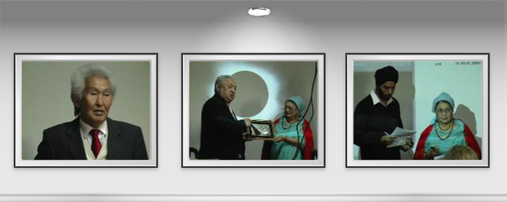
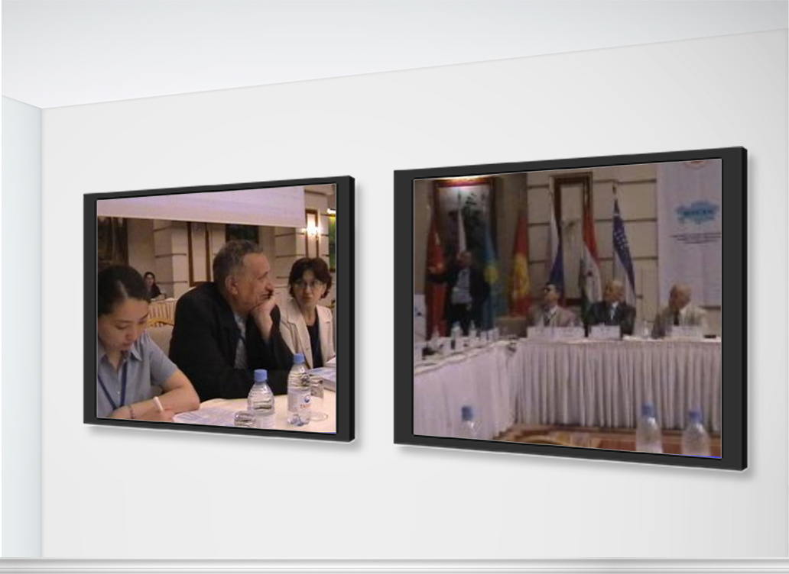
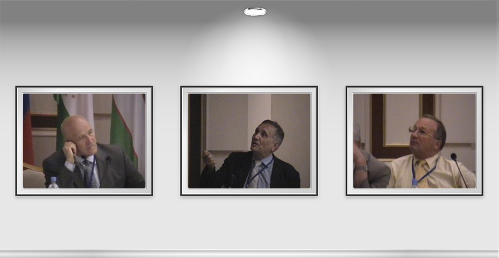
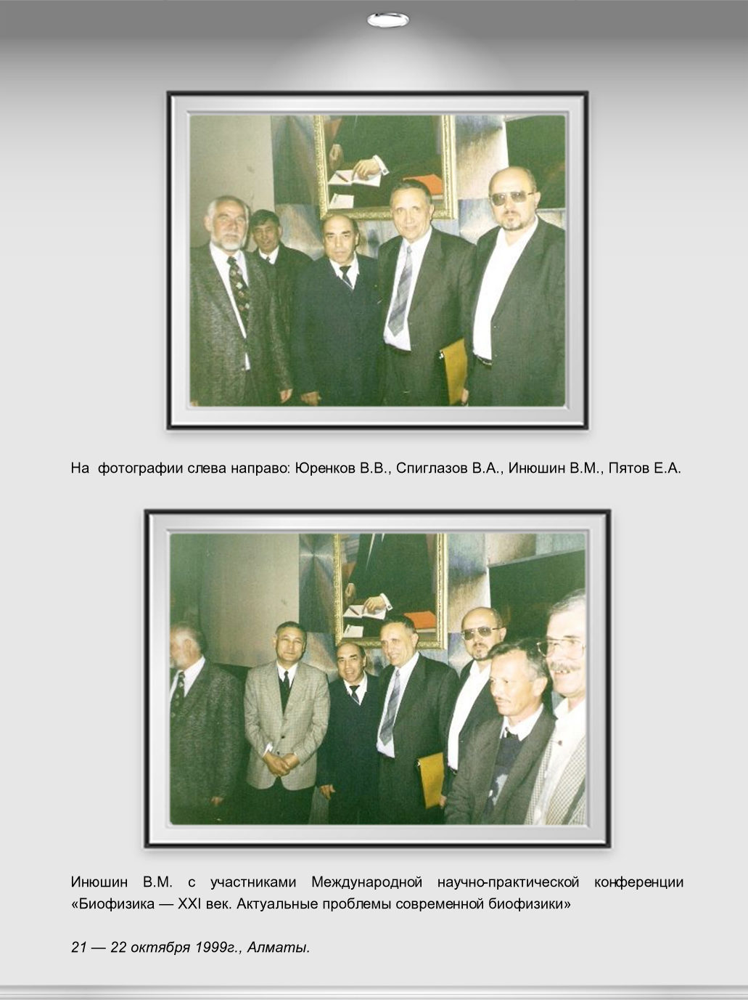

Биофизика
Биоплазма - Пятое состояние вещества
Доклад на международном семинаре
«Биогенная вода, проблемы водной экологии,
безопасность жизни человека»
30 сентября — 1 октября 2005г., г. Алматы.
Вода испытывает мощное негативное энтропийное воздействие от техногенных и природных факторов, которые меняют ее энергетическое содержание.
Как показывают исследования казахстанской школы биофизиков, вода обладает не только молекулярной структурой, она насыщена свободными элементарными частицами, которые структурированы в кластеры. Эти структурированные частицы и получили название «гидроплазма». Такие формации из элементарных частиц способны «запоминать» различного рода физические и химические воздействия, что существенно влияет на некоторые физикохимические свойства воды, а также на ее биологическую ценность. Этого не учитывают многие исследователи, считая, что вода это просто растворитель.
А это имеет огромное экологическое значение. Если память воды меняется, если появляются патогенные энергетические, волновые структуры, то соответственно появляется негативное воздействие на человека, на его здоровье.
С вопросом изменения водных структур мы столкнулись еще в 70-х годах при изучении действия монохроматического красного поляризованного света газового гелий-неонового лазера на организм.
В те времена у всех вызывало великое сомнение: как это какой-то свет с определенной длиной волны и с какой-то ничтожной энергией может что-то изменять в живой клетке? В 1972 году на ученом совете в Львове меня спрашивали: молодой человек, Вы что-то не то придумали, этого не может быть!
Тогда, в своей докторской, впервые, опираясь на предшественников, я выдвинул концепцию о том, что речь идет об изменениях, которые происходят в водных структурах. Обратите внимание! На эритроцитах мы показали, что предварительно обработанная вода при воздействии на мембраны эритроцитов меняет их устойчивость.
Было доказано, что даже при отсутствии молекулярных фоторецепторов, вода изменяет свои свойства даже при кратковременных воздействиях. Более того, повторное воздействие усиливало эти эффекты, что было связано с феноменом «запоминания прежних воздействий».
Более углубленные исследования показали, что вода обладает очень высокой чувствительностью не только в оптическом диапазоне, но и в инфракрасном тепловом, миллиметровом и других участках электромагнитного спектра. И везде наблюдались резонансные спектральные участки, которые давали наибольшую амплитуду изменения памяти водных структур.
Совместно с академиком НАН Лукьяновым А.Т., который провел большой цикл физико-химических исследований, мы назвали этот феномен «резонансной спектральной памятью воды».
Однако, наличие такой динамичной структуры как плазменная структура воды, или гидроплазма, создает колоссальные трудности для исследования свойств воды.
Гидроплазма реагирует на флуктуации, которые происходят в гелиоплазме (солнечная активность), геоплазме (предвестники сейсмической активности), а также в связи с неоднородностью литосферы Земли (электрической, магнитной и гравитационной), которая наиболее ярко проявляется в геоаномалиях как природного, так и техногенного влияния.
Так, Семипалатинский ядерный полигон является примером сложения техногенных и природных геоаномалий. Именно этот полигон демонстрирует, насколько опасно для жизни человека изменение, или, вернее, деструкция биогенной памяти воды как во внешней среде (водные источники), так и внутренней среде (вирусы, бактерии, животные, человек). Трансформируется вирулентность вирусов и бактерий, изменяется интенсивность фотосинтеза растений, падает иммунитет у животных. Развиваются процессы иммунодефицита у человека, несмотря на огромные усилия медицины, которая в основном использует энтропийные способы воздействия на биохимические ингредиенты и процессы в организме человека.
Вот почему так важно решение проблемы биогенизации воды, т.е. насыщение воды гидроплазмой за счет антиэнтропийных структур биоплазмы при ее высокой плотности и концентрации, которые и обуславливают высокую способность природной воды к самоочистке.
Когда проводили исследования в Киеве совместно с Институтом теоретической физики, то было выяснено, что вода после обработки меняет оптическую активность, т.е. спин у фотона меняется, и термодинамика у воды в целом меняется за счет изменения характеристики гидроплазмы.
Дело не в количестве воды, дело в качестве воды.Вот почему мы выдвинули главную концепцию, что содержание гидроплазмы это функция, прежде всего, биогенных контактов воды, и если мы воду обрабатываем мембранными технологиями или различными адсорбентами, то мы омертвляем воду, не даем людям полезную воду.
Основной стержень в биофизических исследованиях структуры воды находится в гидроплазме. Изучение гидроплазмы дает ключ к пониманию высоко концентрированной воды с огромным запасом свободной энергии, т.е. фактически антиэнтропийной воды.
Первые установки производства такой воды уже существуют. Такие технологии созданы. Такой доклад будет, и мы его будем обсуждать. Он показывает реальность такой конструкции, реальность такой технологии, которая может кардинально изменить водную экологию всего Казахстана.
Те работы, которые мы проводили в Индии с доктором Мехер - Мастер Мусс с участием специальной лаборатории Министерства обороны Индии, оснащенной высококлассным оборудованием, показали великолепные результаты.
Рост биологической полноценности воды объясняется увеличением гидроплазмы.
Вот почему я упомянул, что мембранные технологии дают чистую воду, но это мертвая вода, которая опаснее загрязненной воды.
Вода является оболочкой, скелетом для биоплазмы. Изменяется биоплазма, изменяется вода. Вода создает устойчивость биоплазмы. Вот почему без биоплазмы разрушаются человек, животные, растения. Вот почему мы бьем тревогу: давайте займемся водой.
Антиэнтропийные структуры — частицы физического вакуума. Вакуум насыщен частицами, а значит, он насыщен волнами, это волновая структура, и все это входит в нашу живую субстанцию, обуславливая нашу жизнь.
Биоплазма взаимодействует с аэросферой, литосферой, гидросферой. К гидросфере отношение должно быть особое. Гидросфера оставляет отпечатки на биоплазме.
Нижняя фотография показывает фотонную эмиссию от пальца человека, а верхний снимок показывает разрушение биоплазменного поля человека после того, как он находился длительное время под воздействием геоаномального поля
Нарушение биоплазменного поля постепенно приводит к нарушениям в организме.
У медицины, с точки зрения экономики, мы должны забрать часть прибыли для развития биоэнергетической реабилитации человека — альтернативы современной медицине.
Сейчас в медицине сложилась такая ситуация, что чем выше заболеваемость, тем больше необходимо средств на медицину. Надо сказать — чем меньше будет болезней, тем больше будет у медицины средств на решение неотложных мер.
Если общество не пойдет на массовые мероприятия по биогенизации воды для населения, то может снизиться резистентность человека к болезням, уменьшится потенция интеллекта человека, без которого дальнейшее существование общества становится невозможным.
Биогенная вода, насыщенная гидроплазмой, может производиться на отдельных промышленных и бытовых установках, которые разработаны и уже действуют. Уже сейчас есть установки для получения концентрированной биогенной воды.
Полагаю, что тематика Международного семинара как раз и создаст тот плацдарм, который не позволит допустить катастрофу человека и общества в условиях энтропийной цивилизации.
Доклад Инюшина В.М. о проектах биогенизации вод в Казахстане участникам
Международного Круглого Стола «Евразийский центр воды:
от замысла к созданию»
26 июня 2007г., Астана.
